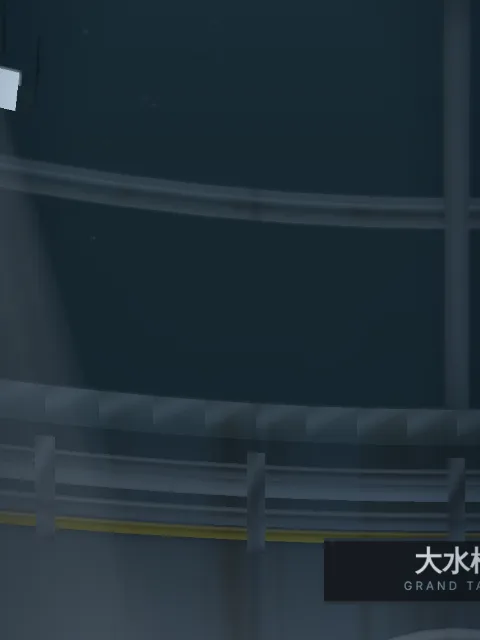
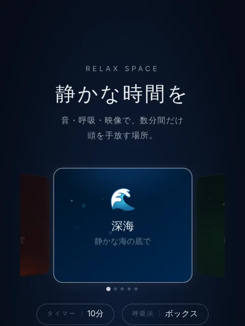

ぜんぶコードで描いた、水族館。
水の光学現象も生き物の形も泳ぎ方も、すべてコードで手続き生成した Three.js の水族館。
光のゆらぎも魚の泳ぎも手続き生成
えさをまくと、魚が集まってくる
図鑑から選んだ生き物をカメラが追う

瞑想とリラックスのための、静かな空間。
空気抵抗・風・燃焼・黒体放射・音速までモデル化した、物理演算の打ち上げ花火。
Three.js 製の 3D ヘックス開拓ゲーム。5種類のルールを CPU 戦と合言葉のオンライン対戦で遊べる。
ホバー操作で障害物をかわし続けるアクションゲーム。
← 38 本の一覧へ